SCCCD · Identity & Security
Student Multifactor Authentication
A web application that allows students to opt into multifactor authentication.
View case study →PORTFOLIO
Use the filters to move from the strongest engineering examples to UX, accessibility, AI, systems, and leadership work. The goal is breadth without forcing every visitor to read everything.
SCCCD · Identity & Security
A web application that allows students to opt into multifactor authentication.
View case study →
SCCCD · Admin Platform
An internal application for IT staff to manage and publish orientation content.
View case study →
SCCCD · Student Experience
An accessible application that guides new students through a required orientation.
View case study →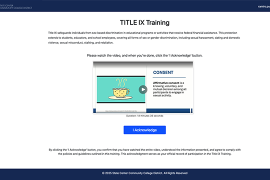
SCCCD · Student Workflow
A student-facing application that supports Title IX acknowledgement requirements.
View case study →
Personal Project · AI + Accessibility
A Chrome extension concept that uses Gemini AI to help users improve web accessibility.
View case study →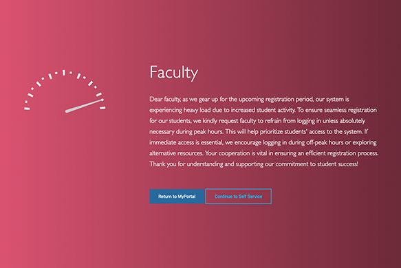
SCCCD · UX Communication
A focused landing experience designed to reduce system pressure during peak student usage.
View case study →
SCCCD · Enterprise Application
An application that helps instructional faculty quickly access course and student roster information.
View case study →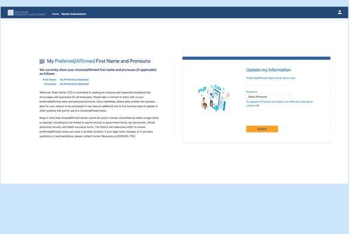
SCCCD · HR Workflow
An application that supports preferred-name and pronoun updates through a structured staff workflow.
View case study →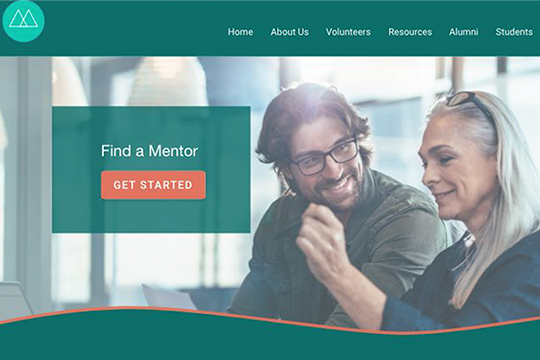
Professional Development · UX Concept
A mentorship website concept created to explore research, information architecture, and interaction design.
View case study →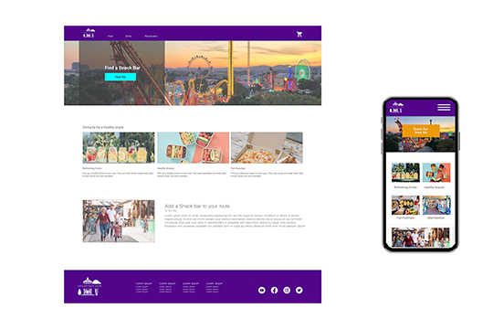
Professional Development · UX Concept
A concept focused on improving the amusement-park snack-bar experience.
View case study →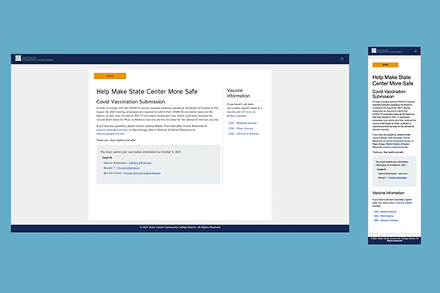
SCCCD · HR Application
An urgent staff workflow created to support vaccination-status submissions during return-to-work operations.
View case study →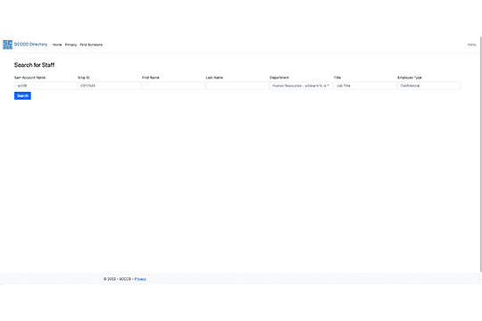
SCCCD · Internal Tool
An internal directory experience designed to make staff lookup faster and easier.
View case study →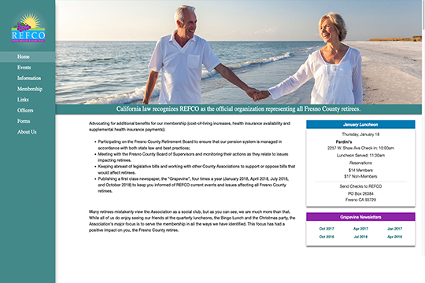
Freelance · Website Redesign
A redesign of an existing company website with a cleaner, more modern experience.
View case study →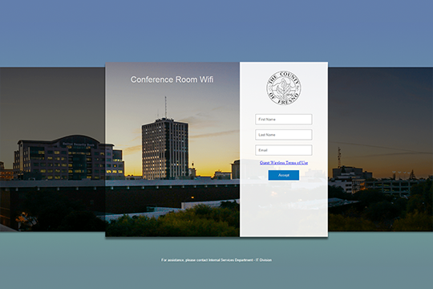
Fresno County · UX Refresh
A redesign of a legacy guest Wi-Fi experience.
View case study →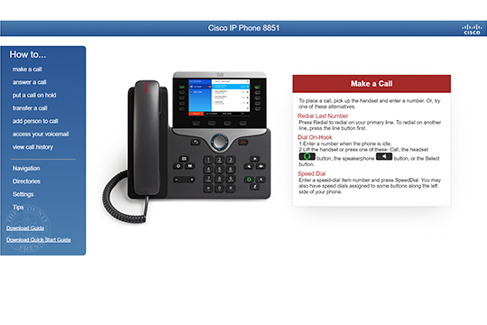
Fresno County · Support Experience
A self-service help experience created to reduce confusion during a phone-system upgrade.
View case study →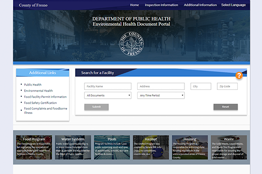
Fresno County · Performance + UX
A modernization effort that began as a performance request and expanded into a broader UX improvement.
View case study →
Fresno County · Technical Leadership
A public website CMS migration supported as a subject-matter expert and project lead.
View case study →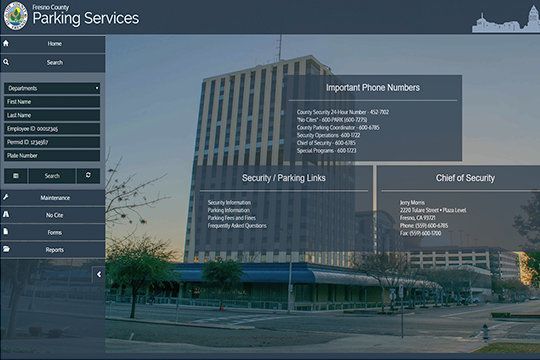
Fresno County · Enterprise Application
A replacement application designed for parking-service workflows that had outgrown the legacy system.
View case study →No projects match this filter.